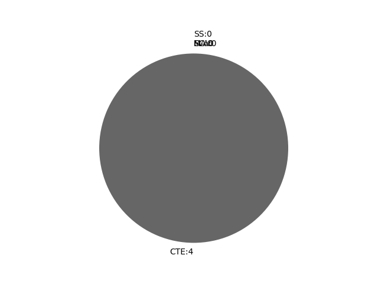

Indiana
Report date: 2021-07-08
The frequency of all keywords found in this state's standards: 4
Comparable state score: 0.066 (median: .303, SD: .324)
The frequency above is the sum of all keywords found in all of this state's four core academic standards and the state's CTE/career standards. This total count is broken down by keyword and discipline area below.
On this site, 'comparable scores' are calculated as: keywords found divided by total words in the standards document(s) - multiplied by 100,000. The comparable scores attempt to normalize data, accounting for very different sizes of curriculum guidance documentation.
Frequencies by keyword or phrase:- spatial: 2
- geospatial: 1
- GIS: 1

Frequencies by discipline area: - SS: 0
(Comp: 0.0) - SC: 0
(Comp: 0.0) - MA: 0
(Comp: 0.0) - ELA: 0
(Comp: None) - CTE: 4
(Comp: 0.092)
External support files:
Examples of keyword use by discipline area (and document): - CTE
- natural-resources-framework.pdf, page:3, position:976
NR-5.4 Demonstrate geospatial skills, tools and technologies to aid in developing, implementing and evaluating natural resource management plans (land surveys, geographic coordinate systems, GIS data, etc.) NR-5.5 Identify and discuss eco - natural-resources-framework.pdf, page:3, position:802
techniques for improving outdoor recreation opportunities NR-5.3 Identify, assess, and apply the uses of natural resources for outdoor recreation opportunities NR-5.4 Demonstrate geospatial skills, tools and technologies to aid in developi - cf-eng-civil-engineeringandarchitecture-pltw-8-24-16.pdf, page:1, position:916
on various civil and architecture engineering careers. Domain Architectural Design, Cost & Efficiency Core Standard 3 Students assess architectural design to incorporate the use of spatial relationships, building layout, and costs in - cf-eng-civil-engineering-architecture-3718mr.pdf, page:2, position:980
structural and architectural design to historical designs. Domain ΠArchitectural Design, Cost & Efficiency Core Standard 2 Students assess architectural design to incorporate the use of spatial relationships, building layout, and costs in
{kind=link}